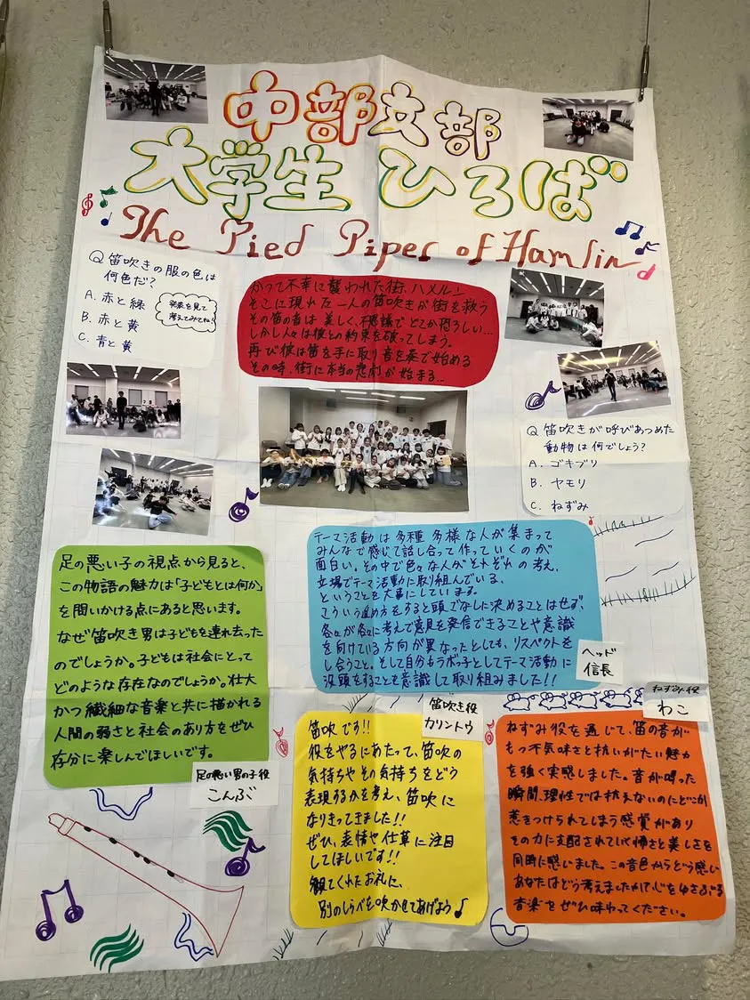

中部支部大学生ひろば
『The Pied Piper of Hamelin ハメルンの笛ふき』（SK28-DISCⅣ

あらすじ
“And so long after what happened here
“On the Twenty-second of July,
“Thirteen hundred and seventy-six:”
”1376年7月22日
ここでかくかく しかじかありき”
原作者:ロバート・ブラウニング
ハメルンの笛ふき（SK28）『The Pied Piper of Hamelin ハメルンの笛ふき』
ラボ教育センター
コメント
英のみで発表します。よくライブラリーを聴いてから来てください！
―あらすじの文はどこに出てくるでしょう。
当日写真
支部's模造紙

対談企画 後日回答
A1.「ねずみのところ」というのが具体的にどの場面を指しているか分かりませんが、“Rats！”の後の冒頭部分だと解釈します。この物語はあくまで人間の町で起こった話で合って、ねずみは人間に被害をもたらした存在にすぎないという意見が出ました。そのため、ここではあくまで人間視点で描こうという総意になった次第です。
A2.ねずみの大群になっているときに、文字通りもみくちゃになっているのですが、本番の皆の物語への没入度は段違いだったため、それはもう誰一人怪我なんて気にしていない状態でした。そのため、途中で誰かの手が当たって私のメガネが弾かれて落ちたんですね。かけてもまた落ちるからもうメガネはいらない、というのと、あそこに落として置いたら踏まれて破壊される、と咄嗟に考え、場面が変わるときに舞台袖にメガネをスライドさせました。キャッチしてくれた実行委員の人、ありがとう！
後日談ですが、支部内の発表会では最初から裸眼で登壇しました。
A3.誰というのはラボっ子のあだ名を聞いているのかなのか、物語上誰として語っているのかなのかどちらの問いでしょうか。後者だとしたら、そこまでは話し合えていないので回答できません。前者であれば4期生のにいなです。趣味テーマ活動のテーマ活動狂いです。
A4.タイトルを言うことに関して、中部支部では話し合う時間は取れていません。なのでその指摘はもっともだなと感想文を読んで、個人的に受け取った次第です。後日、支部の発表会では私個人としてはその指摘を意識して発声しました。